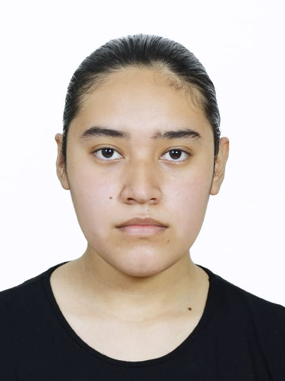

Yessenia Díaz López
Perfil
Estudiante de primer semestre de la carrera Lic.Tecnologías de la información en las organizaciones. Mi objetivo es trabajar como programadora en empresas como Facebook ó Amazon, para despues dedicarme a la docencia. Tambien aspiro poder trabajar fuera de mi pais y aprender buenos idiomas. Deseo mucho seguir estudiando para alcanzar un doctorado o una especialidad en el area del software.
Datos Generales
Dirección: Camino Nacional
Celular: 272-194-4049
Email: yessedzlz@gmail.com
Aptitudes & Habilidades
Creatividad
Trabajo en equipo
Buen entendimiento
Responsabilidad
Liderazgo
Saber encontrar más de una solucion al problema
Pasatiempos
Hacer contenido para mi propia pagina en Facebook
Editar videos
Leer
Tocar la guitarra
Escuchar musica
Hacer ejercicio
Experiencia Laboral
Trabajo: Cafeteria "Yo cereza cafe"
Lugar: Ciudad Mendoza. Ver
Desempeño:
Atender a los clientes.
Administrar el dinero.
ayudante en la cocina.
Idiomas Dominados
Español
Formación Academica
Preparatoria: COBAEV 06. NOGALES VER.
Secundaria: Telesecundaria Ignacio Zaragoza de Jesus. Tecamalucan. ver